AFTERSIGNAL / 1.3
방에서 도시로, 외벽에서 기록실로
실제 Windows 플레이어 캡처와 무편집 게임 영상입니다. 원작 이미지와 동등한 최종 아트 수준을 선언하지 않습니다. 좌우 렌더링 오류·NPC 비율·앞뒤 이동·무기 동작·시민 시설·외벽 경로를 적용하고 검증했습니다.
생활 공간
동일 시작점. 가구 표면·나무 바닥·창문광과 HUD를 수정했고 방 카메라를 더 가깝게 조정했습니다. 카메라까지 동일한 A/B로 주장하지 않습니다.
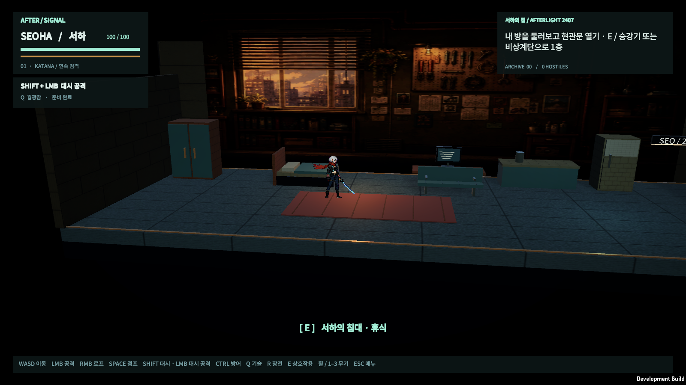
변경 전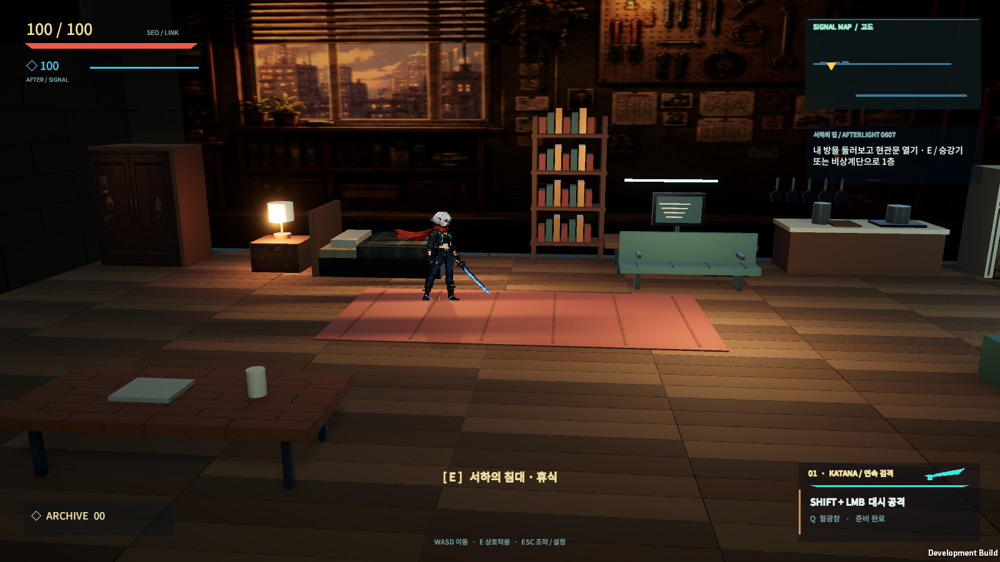
변경 후 · 실제 게임 캡처도시와 인물의 크기
같은 마을 진입 경로의 실제 화면. 투명 여백 때문에 작던 NPC를 몸체 기준으로 수정했습니다.
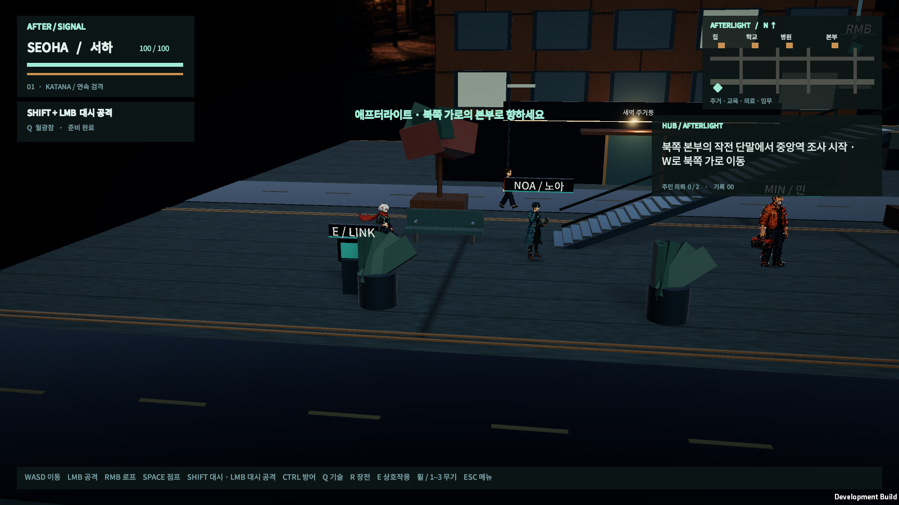
변경 전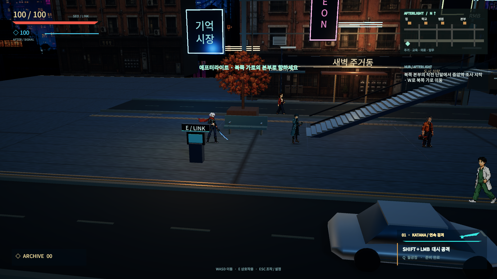
변경 후 · 실제 게임 캡처시설 내부
같은 교실 기록 지점. 반복 벤치 대신 의자·책상·서가, 전경 바닥과 재질을 정리했습니다.
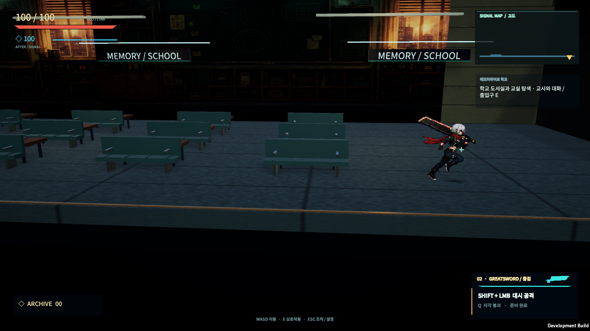
변경 전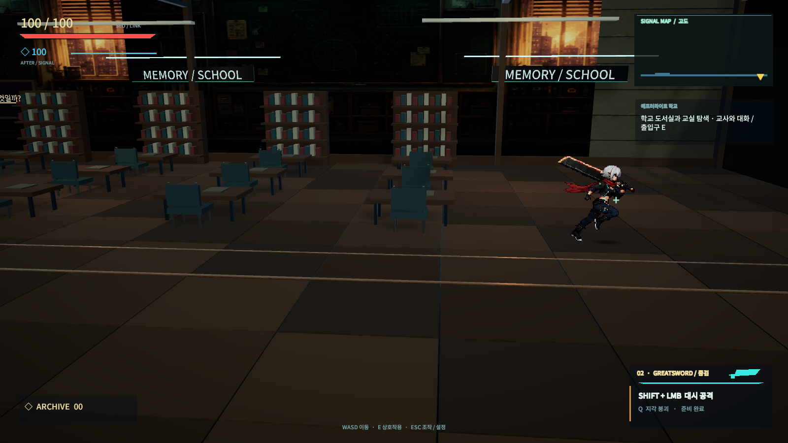
변경 후 · 실제 게임 캡처좌측 · 정면 · 후면
별도의 방향 스프라이트와 실제 GPU 반전을 확인했습니다. PNG 확대는 원본 화면을 보여 줍니다.
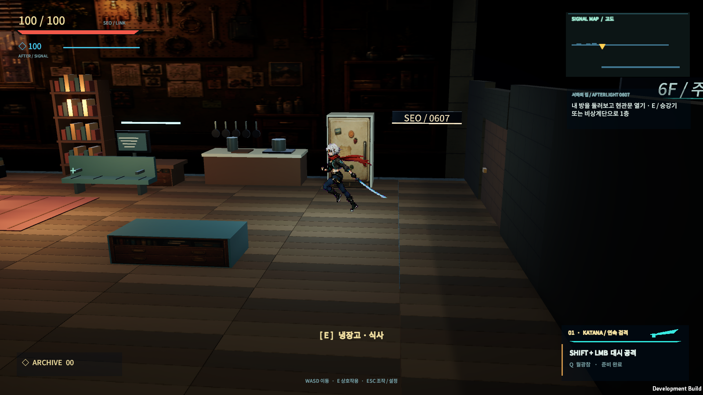
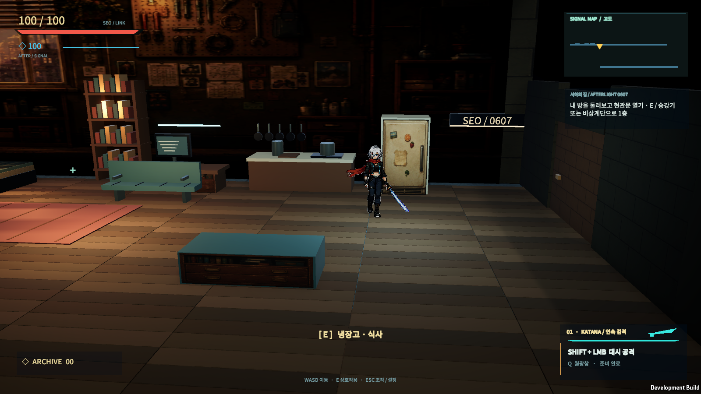
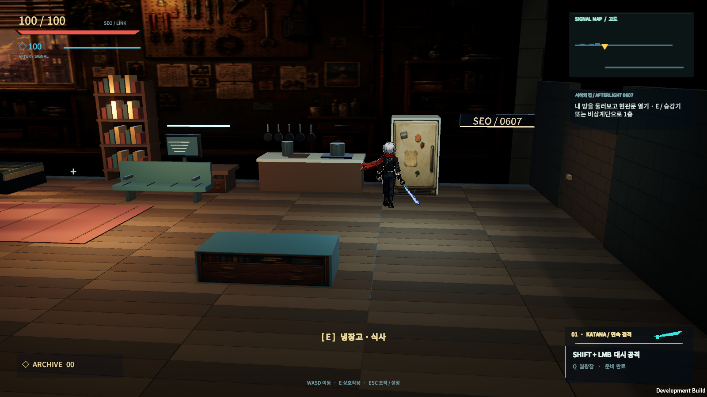
3D 거리와 시설
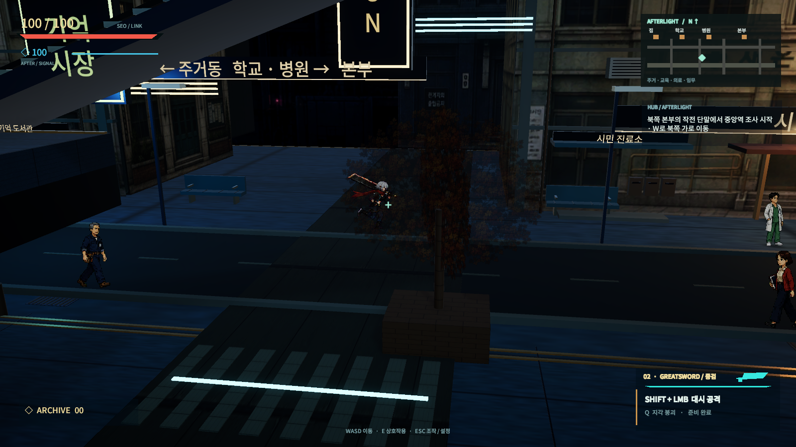
앞뒤 거리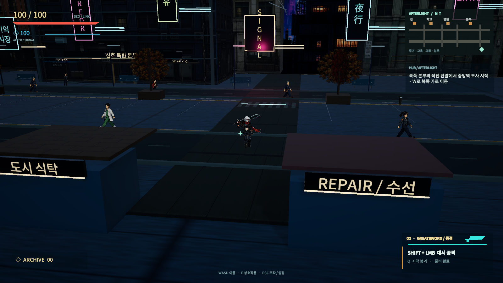
동쪽 가로와 차량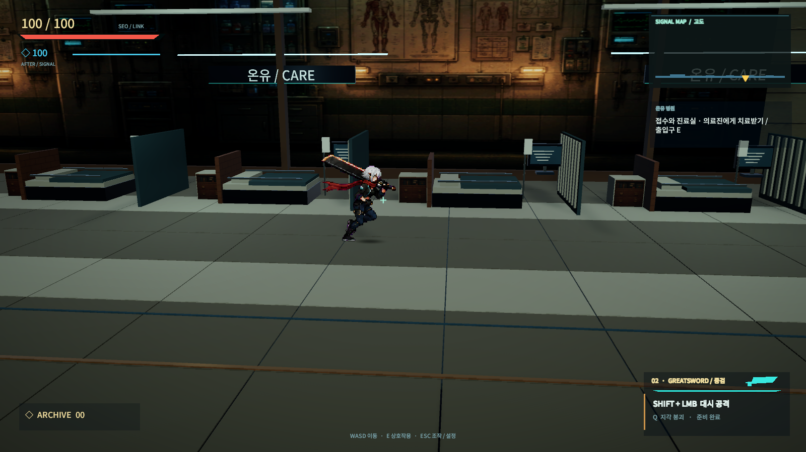
시민 병원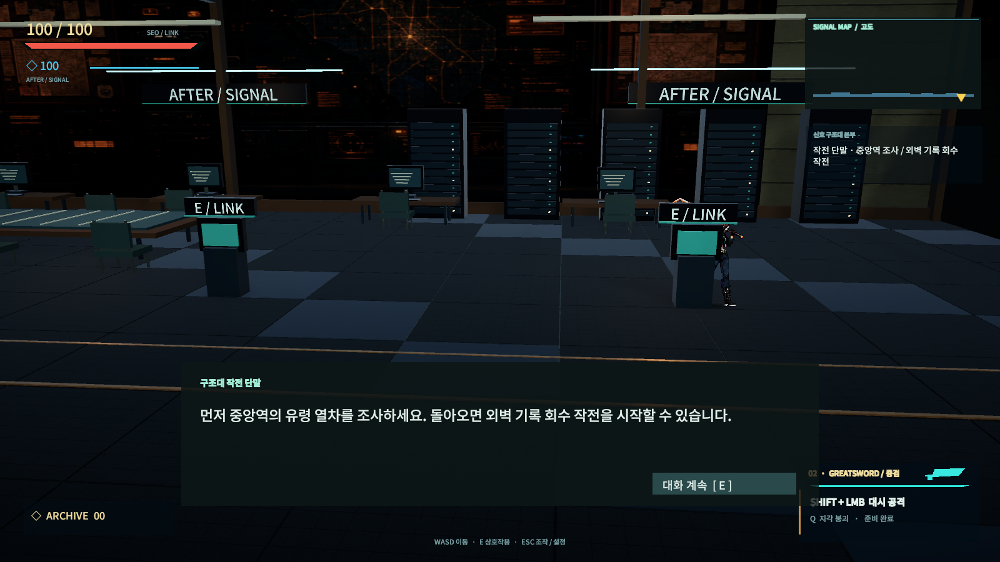
신호 복원 본부무편집 실행 영상
자동 QA가 일반 ControlFrame 경계로 움직입니다. 로프·이동·전투를 순간이동으로 대체하지 않았습니다. 이것만으로 사람의 주관적인 입력감을 검증한 것은 아닙니다.
방 탐색 · 세 무기 · 장전 · 승강기 · 계단4회 등반 · 유리 파괴 · 14명 전투 · 기록기존 품질 구간 Before현재 전투 / 효과 ON현재 전투 / 효과 OFF열차 지붕 / 보스 목표 안내
최종 릴리스 프레임 측정
Ryzen 5 7500F · RTX 4060 Ti · Windows · D3D11 BitBlt · 1600×900 · 60 FPS 제한. 녹화·캡처 OFF, 각 씬 첫 2초 제외. 로딩 프레임과 최소 사양 인증은 포함하지 않습니다.
| 경로 | 측정 프레임 | 평균 | P99 | 33.34ms 초과 |
|---|
| Rail | 3,212 | 16.667 ms | 16.670 ms | 0 |
| Expansion | 23,494 | 16.692 ms | 16.702 ms | 8 |
| Residence | 8,533 | 16.771 ms | 16.673 ms | 5 |
원본 수치 · 경로·테스트 결과 · 변경 파일과 GUID 보존 검사
남은 제작 차이
앞뒤 걷기는 방향당 4프레임이며 시민 루프도 짧습니다. 수작업으로 발디딤·스카프 후행을 다듬고, 상점마다 다른 실루엣과 재질을 더 제작해야 합니다. 일부 소품과 원경은 단순한 3D 형태·그림 판입니다. 실제 오디오 출력은 동봉했으나 사람의 청취 믹스 검수와 최소 사양·초광폭 검증은 남았습니다.